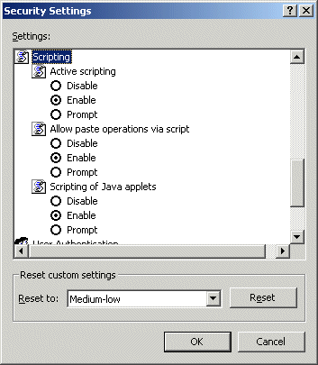

Setting Internet Explorer to Allow Execution of JavaScript
OA uses JavaScript for a variety of different things. Internet Explorer will normally be set up to allow JavaScript to execute, but if it does not, you need to change your settings.
To allow execution of JavaScript:
- In Internet Explorer, select Internet Options from the Tools menu.
- Click the Security tab.
- Click the zone you have assigned the URL to.
- Click Custom Level.
- Scroll down to Scripting - Active scripting.

- Click Enable, then click OK.
- At the warning prompt, click Yes to confirm that you want to change the security settings for this zone.
- Click OK on each screen.